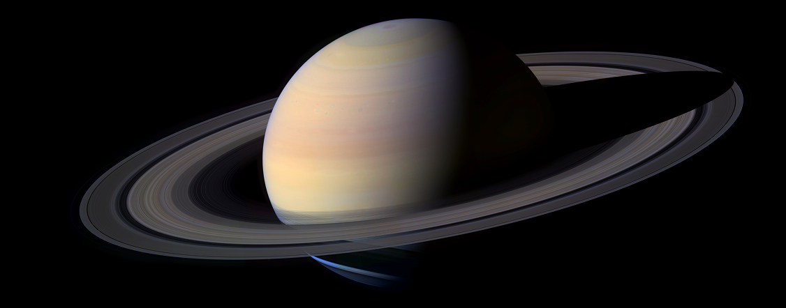
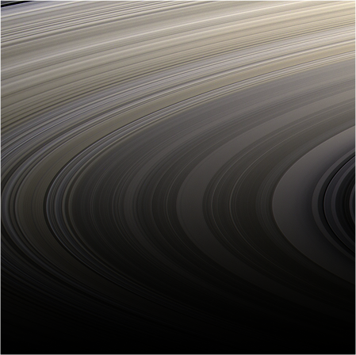
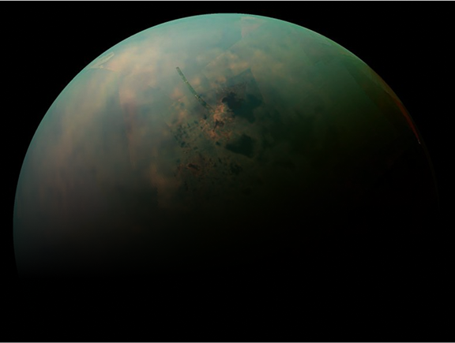

Saturn 
Saturn, the sixth planet from the Sun, is renowned for its stunning rings and is the second-largest planet in our solar system. It is a gas giant, primarily composed of hydrogen and helium, with a diameter of about 120,536 kilometers (74,898 miles). Saturn's atmosphere features bands of clouds and storms, including the famous hexagonal storm at its north pole. The planet has a low density, meaning it could float in water if there were a body of water large enough to hold it. Saturn's beauty and complexity make it one of the most studied planets in our solar system.
The Rings

Saturn's rings are one of the most iconic features in our solar system, composed primarily of ice particles, with a smaller amount of rocky debris and dust. They extend outwards from the planet for thousands of kilometers but are surprisingly thin, measuring only about 10 meters (30 feet) in thickness. The rings are divided into several main sections, including the A, B, and C rings, each with distinct characteristics. The origin of Saturn's rings is still a topic of research, with theories suggesting they may be remnants of moons or comets that were torn apart by Saturn's gravity.
Saturn's rings are one of the most iconic features in our solar system, composed primarily of ice particles, with a smaller amount of rocky debris and dust. They extend outwards from the planet for thousands of kilometers but are surprisingly thin, measuring only about 10 meters (30 feet) in thickness. The rings are divided into several main sections, including the A, B, and C rings, each with distinct characteristics. The origin of Saturn's rings is still a topic of research, with theories suggesting they may be remnants of moons or comets that were torn apart by Saturn's gravity.
The Moons
With at least 274 moons, Saturn hosts a fascinating array of satellites, each with its own unique story. Titan, the largest, is bigger than Mercury and shrouded in a thick, hazy atmosphere rich in nitrogen. Enceladus, though much smaller, captivates scientists with its geysers that spew water vapor and ice particles into space, hinting at a subsurface ocean. Then there's Iapetus, known for its striking two-tone coloration, and Mimas, whose large crater gives it a resemblance to the Death Star. Together, Saturn's moons form a dynamic and diverse family, each contributing to the planet's mystique.